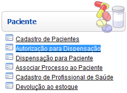
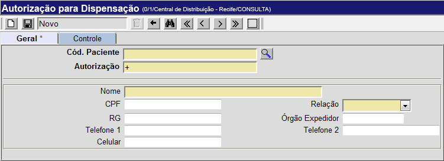
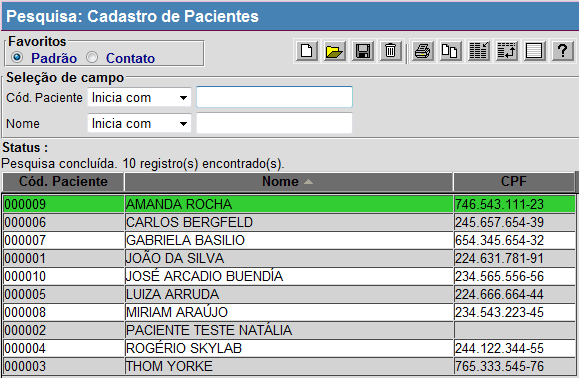

Autorização para Dispensação [ Voltar ]Utilize este formulário para autorizar dispensas de medicamentos a terceiros. O formulário "Autorização para Dispensação" encontra-se dentro do menu "Paciente". 
Ao clicar no nome do formulário, o sistema exibirá a seguinte tela: 
Para criar uma autorização de dispensação, siga os passos abaixo: 1º Passo: informe código do paciente. Clique no botão  [Procurar] ao lado do
campo "Cód. do paciente"
para selecioná-lo a partir de uma listagem de pacientes cadastrados.
Selecione com um clique o paciente desejado. [Procurar] ao lado do
campo "Cód. do paciente"
para selecioná-lo a partir de uma listagem de pacientes cadastrados.
Selecione com um clique o paciente desejado.
2° Passo: informe os dados da pessoa que poderá receber o medicamento em nome do paciente. Preencha os dados pessoais do recebedor. Os campos em amarelo são obrigatórios. Observação: o campo "N°. da autorização" possui um sinal de mais "+" por padrão. Desta forma, assim que a autorização é salva, o sistema atribui à autorização o próximo número disponível. 3º
Passo: clique no botão |
 para criar a autorização
para criar a autorização